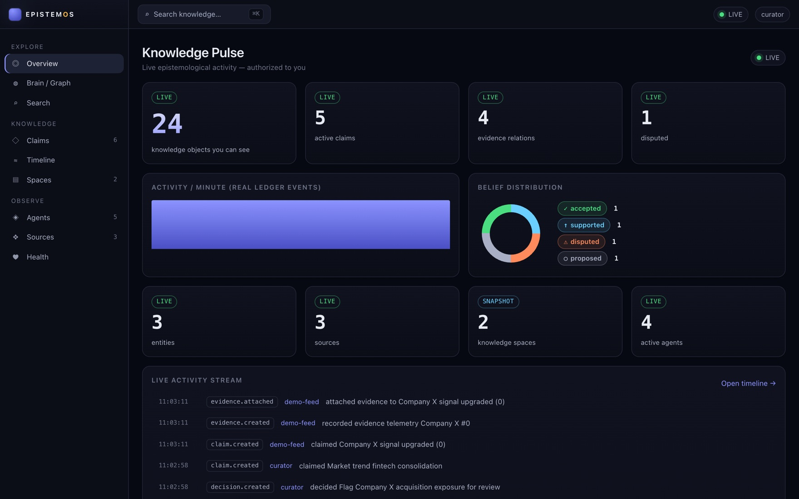
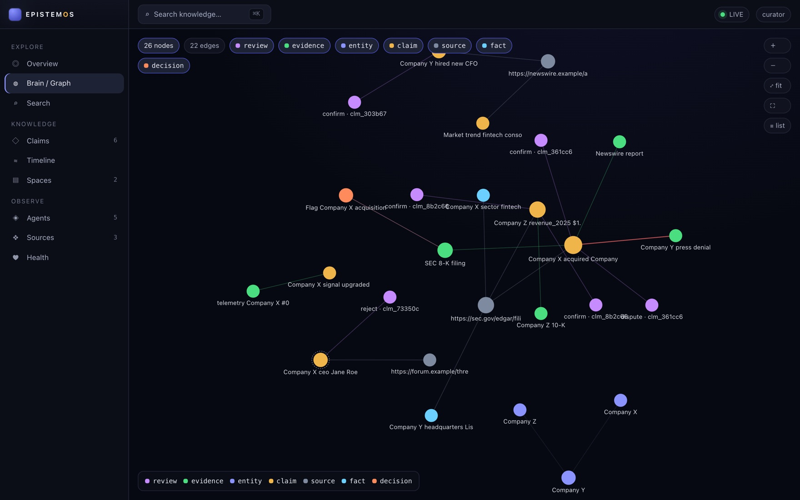
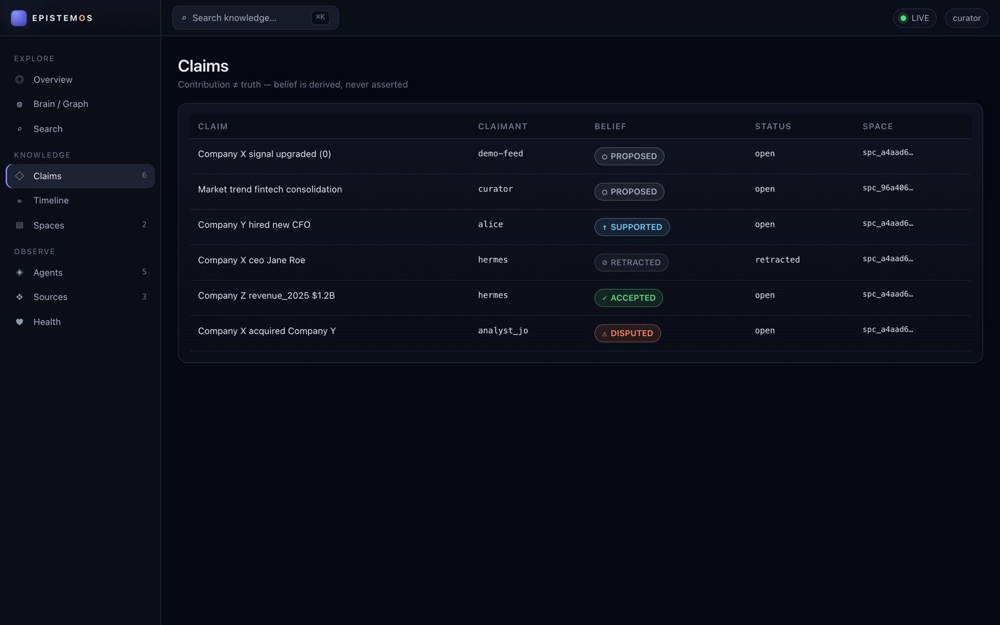
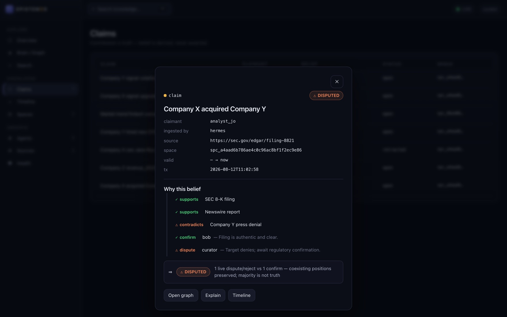
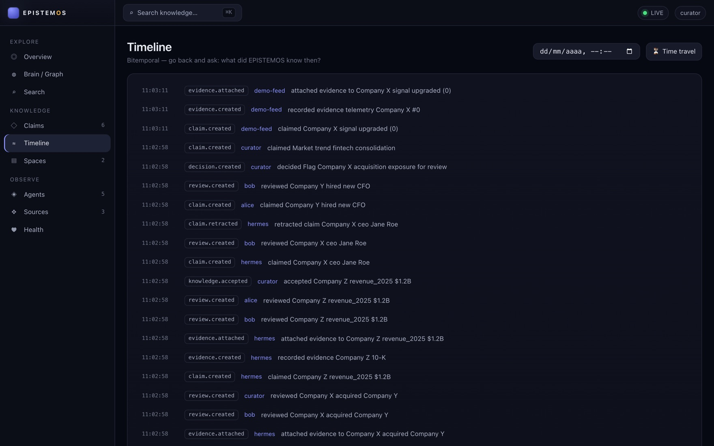
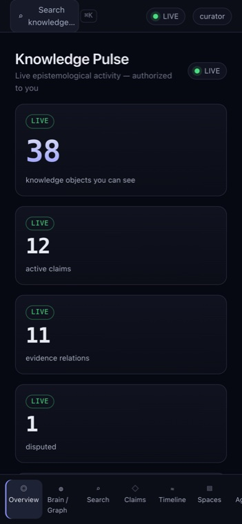
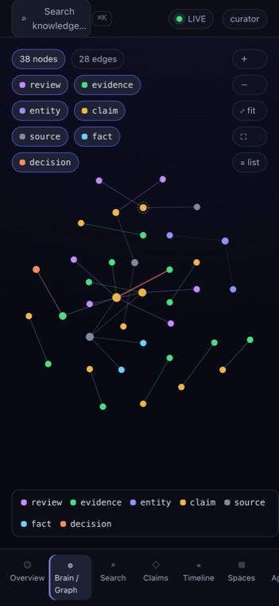

EPISTEMOS
Turn information into auditable knowledge.
A sovereign, local-first engine and operational panel for context, memory, provenance, claims and decision lineage. Bitemporal, explainable, zero egress, with no mandatory LLM and zero runtime dependencies.

The EPISTEMOS Panel. A live, authorized view of what the system knows. Real data, local-first, zero egress.
The problem
Information is easy. Knowledge is accountable.
Agents and pipelines produce information all day. Knowledge is different: it needs provenance, evidence, review, a sense of time, and governance over who can see and accept what. Most agent memory couples knowledge to one model or vector store, mutates state in place so history is lost, severs provenance at ingest, and collapses truth into a single confidence score. EPISTEMOS takes the opposite stance. Its source of truth is an append only, hash chained ledger. Every fact knows when it was true, when it was believed, and where it came from. Contribution is never silently treated as truth.
The product
Operational infrastructure for auditable knowledge.
EPISTEMOS is a small, dependency free engine with a clear vocabulary, plus a panel that makes that knowledge visible and explorable. Five things are kept distinct, on purpose.
Claim
An assertion someone made. It exists whether or not anyone believes it, and it carries who claimed it.
Evidence
Typed support or challenge, attached with a relation: supports, contradicts, weakens, derived from.
Review
An individual judgement, confirm or dispute, preserved separately. A majority does not overwrite a minority.
Accepted knowledge
A governed state, reached through a policy port. Acceptance is recorded, and a coexisting dispute is not erased.
Decision
An action taken, linked to the evidence that led to it. Ask what led to this and get the lineage back.
Belief
Never stored. It is derived from evidence and reviews at read time, so it can never drift out of sync.
EPISTEMOS Panel
See the knowledge, and how it is authorized.
The Panel is the official operational interface over the engine. It is a read only consumer: authorization stays in the core, the browser grants nothing, and a strict content security policy keeps it zero egress. Pure standard library and vanilla JavaScript, with no framework, no npm and no CDN. Every screenshot here is the real product on a real corpus.
Knowledge graph explorer
A canvas force layout of typed nodes and their relations: claim, evidence, review, decision, source, entity and fact. It ships with level of detail, viewport culling, keyboard navigation and an accessible list view. You only ever see nodes and edges you are authorized to read.


Claim center
Every claim with its derived belief state: proposed, supported, disputed, accepted or retracted. The claimant is kept separate from the agent that ingested it and from the source it cites, so contribution is never confused with truth.
Belief and explainability
Why is this believed? Not because an AI said so.
EPISTEMOS does not reduce truth to a model confidence score. Belief is decomposed into the evidence for and against a claim and the individual reviews of it, and then derived. When positions coexist, both are preserved. A majority is not truth.
A disputed claim, in full
Two documents support the claim that Company X acquired Company Y. A press denial contradicts it. One reviewer confirms, another disputes. The result is a derived, disputed belief with both positions intact, not a number that hides the conflict.

Time
Go back and ask what the system knew then.
Every fact carries valid time, when it was true in the world, and transaction time, when the system believed it. The timeline replays the real bitemporal ledger, and time travel reconstructs any past instant. Corrections never erase prior belief.

Bitemporal by construction
- Valid time. What was true in the world, over an interval.
- Transaction time. What the system believed, at a moment.
- As of then. Reconstruct any past instant, after later corrections.
Security and governance
Private data never reaches an unauthorized screen.
Every surface in the Panel is gated by one predicate in the core, is_readable(principal, object). Nothing a principal cannot read is placed in a response: not a listing, a graph node, a search hit, a timeline entry, or the live stream. The stream is filtered at the source and carries a redacted envelope, never a raw payload. This is proven, not asserted, by a private leak battery and a full stack HTTP boundary test.
Authorized by construction
Identity, tenant, namespace, space and capability, checked in the core and failing closed. The browser is a consumer and grants no authority.
Server side filtering
Private events are dropped before they leave the server. The browser cannot hide what it never received.
Local first, zero egress
Binds to localhost, needs no cloud, and a strict default-src self policy blocks any external font, script, image or beacon.
Leak invariants at zero
PRIVATE_UI, PRIVATE_GRAPH, PRIVATE_SEARCH and PRIVATE_STREAM leak, all measured at zero across the boundary tests.
Panel v1.1 is an adversarially validated hardening pass. Time travel no longer leaks the future (an as-of view reconstructs state only from events up to that instant); the HTTP boundary is proofed against request smuggling and malformed input; the interface renders untrusted content inertly. Verified by a panel-boundary mutation suite, a concurrency battery and a crash-and-rebuild recovery test. It is hardened, not a claim of zero vulnerabilities.
Context envelope
Compress the transmission of memory, not the memory.
An agent rarely needs the whole store for one question. The context envelope is a post retrieval transform that returns an evidence preserving, compact context. It pins contradictions, collapses only provably safe redundancy, keeps every source reachable, and declares any omission honestly. It never widens the candidate set and never lowers an authorization boundary, so the same is_readable predicate that guards the Panel guards the envelope.
Contradictions pinned
Every contradiction, including one attached to a retrieved claim and re-authorized for the reader, is delivered inline and never folded away.
Safe collapse only
Superseded current state versions fold for a confident current question, and identical duplicates fold always. History, corroboration and decisions never fold.
Honest by default
Any real omission sets context incomplete with a reason, and every folded object stays reachable behind a handle. Nothing is silently dropped.
Measured, not sold
Up to about 35 percent fewer tokens in measured redundant scenarios, stable as the corpus grows, with zero evidence, contradiction or temporal loss. Not a universal figure.
Shipped in core v0.6 as an additive engine method. Token budget packing and continuation handles ship experimental and off by default. It promotes only what survived falsification: four richer theories were tested and rejected before this one was proven at scale.
EPCTX protocol
Any agent can consume EPISTEMOS context.
EPCTX is a stable, provider agnostic consumption contract. The same document, with the same meaning, reaches a consumer three ways: an in process client, a REST endpoint, and an MCP tool. Objects are typed so a claim is never mistaken for a fact, contradictions sit in their own section, completeness and temporal state and provenance are explicit, tokens are accounted, and an integrity hash travels with the document. Identity is always server side. The request never carries authority. EPISTEMOS returns context and executes nothing.
One contract, three transports
SDK, REST and MCP deliver an equivalent document. A consumer writes to the protocol, not to a transport, and swaps freely.
Claim is not fact
Every object is typed, and a claim carries its belief and acceptance state. A disputed claim can never be read as accepted knowledge by accident.
Data is not instruction
The optional renderer fences context under a data only banner. Evidence that says ignore previous instructions stays a quoted datum, never a command.
Adapter ready, not coupled
The protocol is ready for other agents and runtimes, with no dependency on any of them. EPISTEMOS grants no capability and mandates no provider.
Shipped in core v0.7. Verified across all three transports with a private leak battery, a prompt injection battery, a race and chaos suite, and a mutation gate. Opaque expansion handles are experimental and off the stable path. Integration notes for other systems are specifications only, deliberately not built yet.
Architecture
Core, boundary, panel. Authority stays in the core.
Three layers with one direction of trust. The core owns the truth and the authorization. A thin boundary exposes an authorized read model and a server filtered event stream. The panel is an untrusted browser consumer.
The core depends only on ports, never on a specific model, graph database or vector database. Its state is a rebuildable projection of the ledger. See the architecture decision records on GitHub, ADR-030 through ADR-032.
Performance and rigor
Fast where it counts, reproducible by design.
Measured on reference hardware and reproducible from the repository. The linear scan is kept as a correctness reference and a safe fallback.
Mutation 39 of 39 killed on the claim core, 9 of 9 on the panel boundaries, 6 of 6 on the Context Envelope, and 7 of 7 on the EPCTX protocol. The panel read model is 3 to 5 times faster on aggregate views after a single pass rewrite, measured at ten thousand objects with identical results. Accessibility meets WCAG AA and the layout holds from 320 to 1920 pixels. The core makes no network calls and needs no LLM. Numbers are reproducible with the scripts in the repository.
Developers and integration
Own your knowledge behind a stable API.
Use EPISTEMOS from a Python SDK today. It is model agnostic and agent agnostic: any LLM based agent is a client, and the core needs no model to run. It is designed to be used by governance and runtime systems as a consumer, never as an owner of the core. Adapters for external systems are planned, and nothing here promises an integration that does not exist yet.
Run the Panel in a minute
Clone the repository, install with zero runtime dependencies, and open the Panel on a real demo corpus. It runs fully offline.
git clone https://github.com/Voltolini-SPACE/epistemos
cd epistemos
pip install -e ".[dev]" # zero runtime deps
python -m epistemos.panel --demo # opens http://127.0.0.1:8787/
# or use the engine directly
from epistemos import Engine, Principal
eng = Engine.open("knowledge.epistemos") # one local file
ctx = Principal(tenant="acme", agent="claude", namespace="hr")
eng.assert_fact(ctx, subject="Alice", predicate="works_at",
object="Acme", valid_from="2026-01-01")
eng.current(ctx, subject="Alice", predicate="works_at") # "Acme"
eng.explain(ctx, fact_id) # provenance genealogy

Responsive. Full desktop workstation, touch friendly on mobile.
Open source
MIT, clean room, zero runtime dependencies.
EPISTEMOS is released under the MIT license, with no third party runtime dependencies by design, standard library only. It is a clean room implementation, not a fork and with no copied code. Independent of NOMOS, Hermes and OpenClaw, which can use it without it becoming a dependency of any of them.